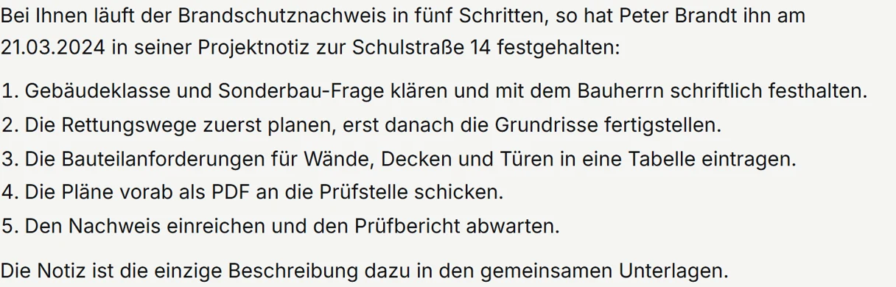
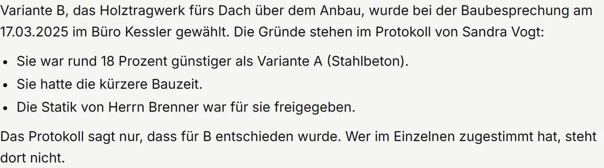
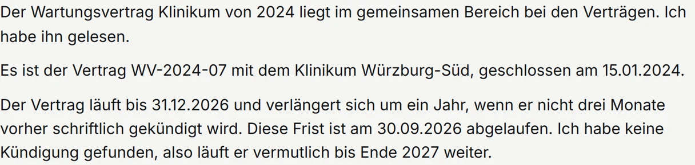
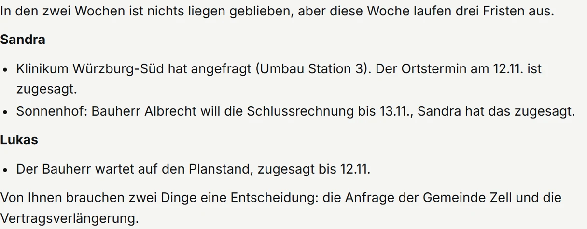
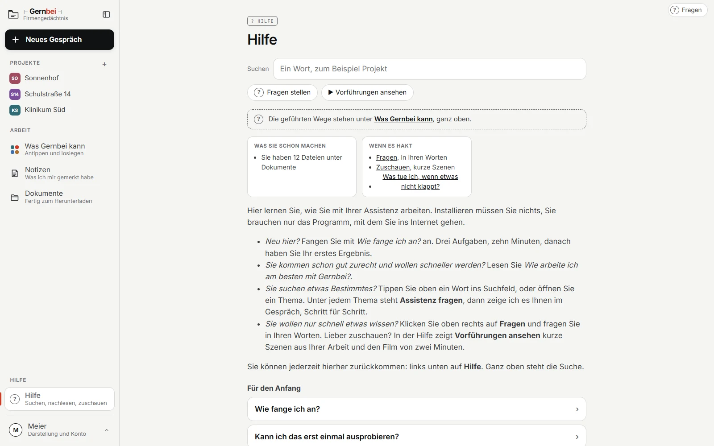

Für Firmen ab vier Mitarbeitern
Wer wusste das noch? Jetzt alle.
Das Firmengedächtnis ist Ihr eigenes Wissen, befragbar: Ihre Projekte, Ihre Kunden und die Gründe hinter Ihren Entscheidungen. Jede Antwort nennt die Quelle, und Ihr ganzes Team fragt mit.
Läuft bei Amazon. Browser öffnen, loslegen.
Gernbei Firmengedächtnis
Lukas, Woche zwei, am Rechner
aus Peters Notiz, März 2024 → für Lukas, heute
Wer fragt? Tippen Sie an.
Erfundenes Büro, echte Antwort, gekürzt.
Wer sieht was
bewusst freigegeben
Das gemeinsame Firmengedächtnis
Sie legen fest, wer mitliest. Jede Antwort nennt ihre Quelle.
Jedes Projekt hat seine eigenen Regeln. Sie gelten für alle, die daran mitarbeiten, und nur dort.
Nachts gesichert und geprüft. Morgens liegt der Bericht bereit.
Was es für Sie tut
Eine allgemeine KI weiß, wie man einen Brandschutznachweis grundsätzlich führt. Das Firmengedächtnis weiß, wie Sie ihn führen.

QuelleSie fragen in ganzen Sätzen. Darunter steht, aus welcher Notiz oder welchem Blatt die Antwort stammt. Fehlt ein Beleg, steht das offen da.

EntscheidungenDas Ergebnis und den Grund dazu, mit Datum. Warum haben wir das damals so gemacht? beantwortet sonst nur das lange Gedächtnis.

MitschriftWas jemand am Tag mit ihr erledigt, notiert sie nebenher. Jede Datei, die hereinkommt, bekommt eine kurze Beschreibung. So findet auch der neue Kollege den Vertrag von 2024.

MorgenberichtNachts wird gesichert und geprüft. Wer aus dem Urlaub kommt, bekommt zuerst einen kurzen Stand: was neu ist, was fällig ist.
Arbeitet Ihr Büro mit Microsoft 365, arbeitet die Assistenz mit Outlook, Excel und SharePoint.
Gelesen und geschrieben wird nur, wenn jemand es sagt, und nur in der Datei, die er nennt. Löschen bleibt bei Ihnen. Ihre IT schaltet die Verbindung ein und jederzeit wieder ab; das richte ich mit ihr ein.
| Sonst liefert das | Bei der Assistenz im Preis |
|---|---|
| Social-Media-Agentur, Texter | Beiträge und Profiltexte für LinkedIn, Instagram, Facebook, TikTok, YouTube und das Google-Unternehmensprofil, aus Ihrer Ablage, mit Hinweis, wenn eine Pflichtangabe fehlt. Online stellen Sie selbst |
| Büroservice, Assistenz | Aufgaben organisieren: was ansteht, was wartet, was fällig ist, mit Fristen und Wiedervorlagen, je Vorgang die offenen Punkte |
| Präsentationsgestalter | Ein Foliensatz aus einem Dokument oder drei Stichworten |
| Unternehmensberater | Eine Entscheidungsvorlage auf einer Seite, mit Empfehlung und Gegenrede |
| Projektbüro | Protokoll und Statusbericht aus Notizen und Ablage |
| Moderator | Ein Workshop: Agenda, Moderationsplan, Ergebnisprotokoll aus den Fotos der Karten |
| Qualitätsberater | Maßstab und Prüfliste für das erste Blatt einer Art |
| Kanzlei, Dienstleister | Angaben über Dritte aus Unterlagen nehmen, bevor sie weitergehen: Personen werden Rollen, Anschriften werden Orte. Sie sehen das Ergebnis vorher, unsichere Stellen nennt die Assistenz |
Online stellen Sie selbst, mit einem Klick, und das bleibt so.
Zwei Wege hinein
Sie bestimmen das Tempo.
Ein Zugang für Sie, mit Gernbei fürs Handwerk oder Gernbei für Dienstleister
Sie haben danach Ihre eigene Assistenz und die erste Arbeit darin
Ihre Führungskräfte bekommen einen Zugang
Sie haben danach mehrere Bereiche, jeder für sich
Alle ins Firmengedächtnis, mit Schulung beim Umstieg
Sie haben danach den gemeinsamen Bereich, Ihr Team fragt mit
Den einmaligen Betrag für den Umstieg kennen Sie vorher, aus dem Angebot.
Wenn Ihre Schlüsselpersonen die Zeit dafür haben.
KI-Standortbestimmung bei Ihnen, über die BAFA förderfähig
Sie haben danach ein Bild, wo heute welches Wissen liegt und was verloren ginge
Monat 1: Zugänge, Vertrag zur Auftragsverarbeitung, die wichtigsten Abläufe
Sie haben danach jeder im Team hat seinen Zugang
Monat 2: Schulung für alle, Fachwissen und Projekthistorie einbringen
Sie haben danach Ihr Bestand ist im Firmengedächtnis
Monat 3: Feinschliff an den häufigsten Fragen, Übergabe
Sie haben danach zwei bis drei interne Ansprechpartner, das Haus fragt mit
| Wann | Was ich mache | Was Sie beisteuern |
|---|---|---|
| KI-Standortbestimmung | Ich komme zu Ihnen. Wo liegt heute welches Wissen, was geht verloren, wenn Person X morgen fehlt, wer im Team zieht mit und wer zögert | Zeit für Einzelgespräche mit Ihnen und Ihren Schlüsselpersonen, und einen Raum |
| Monat 1 | Zugänge einrichten, Vertrag zur Auftragsverarbeitung abschließen, die wichtigsten Abläufe festhalten, mit jedem Mitarbeiter ein Kennenlerngespräch | Zugang zu Ihren Unterlagen. Eine Ansprechperson bei Ihnen |
| Monat 2 | Schulung für alle. Gespräche mit den Schlüsselpersonen. Fachwissen und Projekthistorie einbringen | Zeit für die Schulung. Zwei bis drei Stunden je Schlüsselperson |
| Monat 3 | Feinschliff an den häufigsten Fragen, Übergabe | Zwei bis drei Freiwillige als interne Ansprechpartner |
Die KI-Standortbestimmung ist über die BAFA förderfähig: 50 Prozent, höchstens 1.750 EUR je Beratung. Die Förderrichtlinie begrenzt eine geförderte Beratung auf fünf Tage, deshalb wird die Standortbestimmung beantragt, der Aufbau folgt danach. Zwei geförderte Beratungen im Jahr sind möglich, solange jede in sich abgeschlossen ist. Anträge sind bis zum 31. Dezember 2026 möglich.
Was das Suchen und ein Abgang Ihr Büro kosten, rechnen Sie in zwanzig Sekunden aus. Ihre Zahl →
Das Gespräch ist unverbindlich. Ich sage Ihnen ehrlich, ob es passt.
Das letzte Wort hat Ihr Büro
Telefon und Abschicken, auch aus Outlook, bleiben bei Ihnen. Am ersten Tag weiß die Assistenz, was Sie ihr geben, und mit jedem Tag mehr.
Die Hilfe steckt in Gernbei selbst: Jede Person sucht selbst oder fragt die Assistenz. Eingerichtet von mir, persönlich, mit Grundkurs für die ersten Zugänge und Schulung beim Umstieg.

Die Hilfe, in Gernbei selbst.
Der Preis
Den Preis nenne ich Ihnen im Gespräch, passend zu Ihrem Betrieb: je Zugang im Monat, dazu einmalig die Einrichtung je Arbeitsplatz. Der gemeinsame Bereich ist im Preis enthalten.
Dazu brauchen Sie ein eigenes Claude-Team bei Anthropic, dem Hersteller der KI.
Ihr Angebot nennt alles einzeln: den Betrag im Monat, die Einrichtung, wo eine anfällt, und das Claude-Team. So sehen Sie die ganzen Kosten, bevor Sie zusagen.
Welcher Weg zu Ihrem Büro passt, klären wir in einem Gespräch. Danach richte ich die ersten Zugänge ein.
Angebot nur für Unternehmer.
Die Einrichtung je Arbeitsplatz kommt einmalig dazu, den Betrag nennt das Angebot.
Datenschutz und Ausstieg
Ihre Unterlagen liegen bei Amazon Web Services in der EU, in Stockholm, in einem Bereich nur für Ihren Betrieb. Betreut und jede Nacht gesichert wird er von mir, neue Stände kommen von selbst. Was die Assistenz für eine Antwort liest, verarbeitet Anthropic auch in den USA; Amazon und Anthropic sind amerikanische Unternehmen. Der eigene Bereich jeder Person ist für die anderen gesperrt.
Sie wissen jetzt, was das Firmengedächtnis ist und was es von Ihnen verlangt. Ob es für Ihr Büro das Richtige ist, finden wir in einem Gespräch heraus. Bringen Sie eine Frage mit, die bei Ihnen immer wieder gestellt wird, oder ein Projektprotokoll.
Und wenn die Antwort nein lautet, sage ich Ihnen das.
● BAFA-gelisteter Berater · 50% Förderung für KMU, 1.750 EUR je Beratung
Oder direkt: hallo@gernbei.de · 0931 45321005 · Würzburg · remote & vor Ort